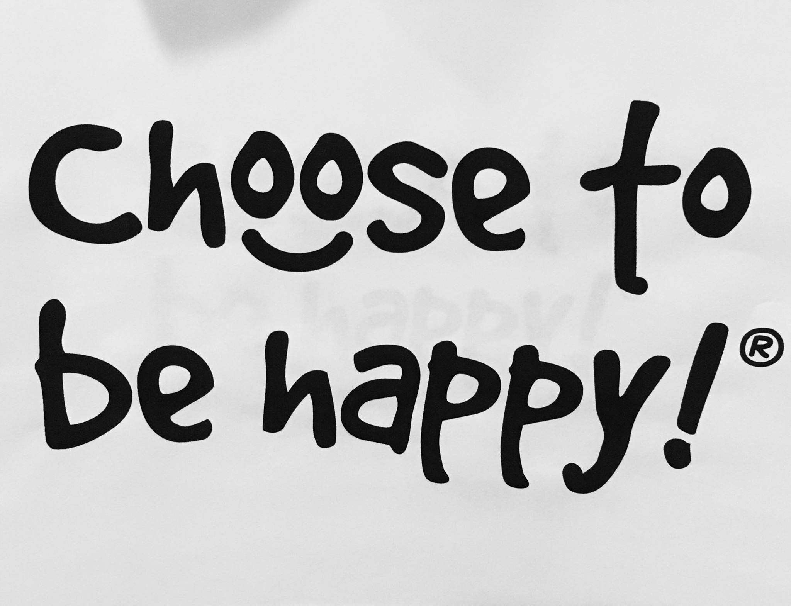

Being depressed leads to falling behind and falling behind leads to depression. It’s an infinite loop that destroys our small happy moments.
Depression (major depressive disorder) is a common and serious medical illness that negatively affects how you feel, the way you think, and how you act.
The death of a loved one, loss of a job, or the ending of a relationship are difficult experiences for a person to endure. It is normal for feelings of sadness or grief to develop in response to such situations. Those experiencing loss often might describe themselves as being “depressed.”
But being sad is not the same as having depression. The grieving process is natural and unique to each individual and shares some of the same features of depression. Both grief and depression may involve intense sadness and withdrawal from usual activities. They are also different in important ways:
In grief, painful feelings come in waves, often intermixed with positive memories of the deceased. In major depression, mood, and/or interest (pleasure) are decreased for most of two weeks.
In grief, self-esteem is usually maintained. In major depression, feelings of worthlessness and self-loathing are common.
In grief, thoughts of death may surface when thinking of or fantasizing about “joining” the deceased loved one. In major depression, thoughts are focused on ending one’s life due to feeling worthless or undeserving of living or being unable to cope with the pain of depression.
Sadness and happiness are the two sides of a single coin. For the living, we need both. But when we practice sadness or sorrow in our daily life, it’s turned into depression. So it’s better to be said: “Depression comes from practice”.
Create own happy moment can reduce those sad or depressed conditions.
Now you may ask how can I be happy when I’m depressed. Happiness can be practice in any way:
First of all, it’s necessary to enjoy yourself. Doing things that you enjoy is good for mental health. A simple activity such as singing, cooking, watching movies, or hang out with friends, or maybe you can do something you are good at. We often underestimate our self. We always compare our lifestyle with our surrounding ones. But it’s important to keep in mind that no one is perfect. Imperfection makes us perfect. Everyone has their problems. So it’s better to deal with that problem
Don’t try to stop negative thinking. If you tell yourself “l have to stop thinking about this”, that only makes you think it more. So it’s better to acknowledge it. Hiding your problem inside you only makes you heavier, and after a certain time, you are unable to carry that weight. So it’s a good practice to acknowledge your problem.
Control your own world. Happiness often comes from within. Our surrounding is what we create. How we see the world can change our surroundings. We think the world owes us something. We think,” If I put in enough hard work, then I deserve success”, “ If I treat someone well, then I deserve well treated”,” if I love hard someone then I deserve loving back”.But expecting success into your lap like some sort of cosmetic reward will only lead to disappointment. But it’s hard to give up those bad habits that we’ve carried around us for so long. But it’s must be necessary to give them up. Because sooner or later, you’re going to hit a time in your life. So it’s a good habit to take everything positively. Overthinking or negativity only leads to our depression.
So Lead a Happy life lead a healthy life.....